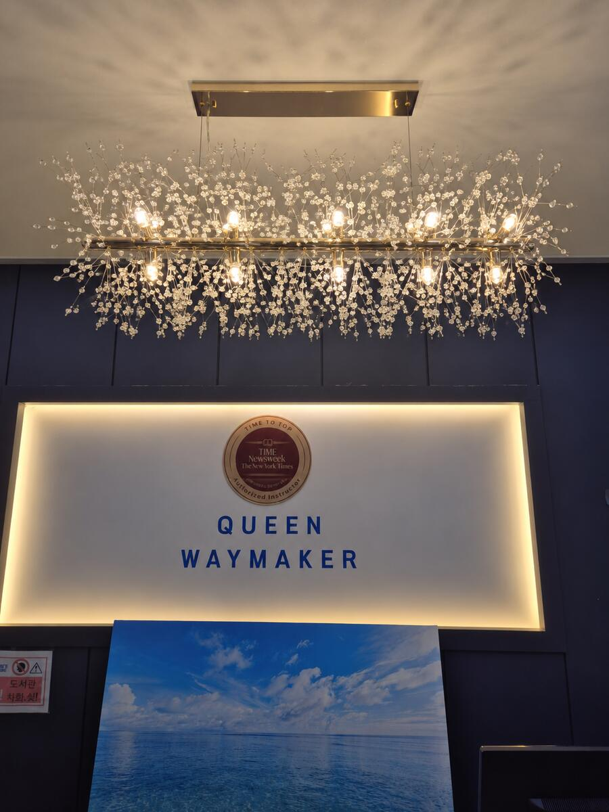
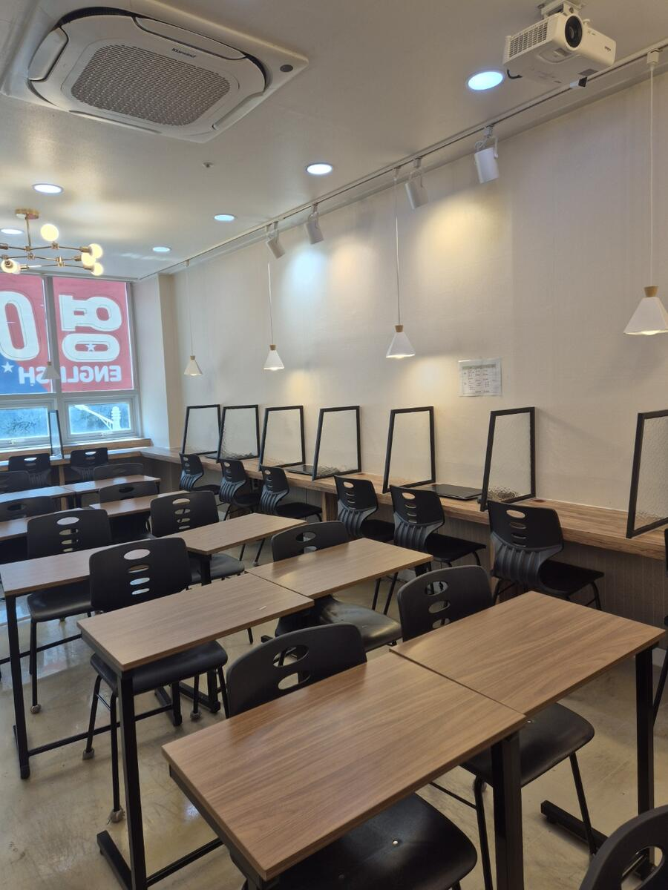
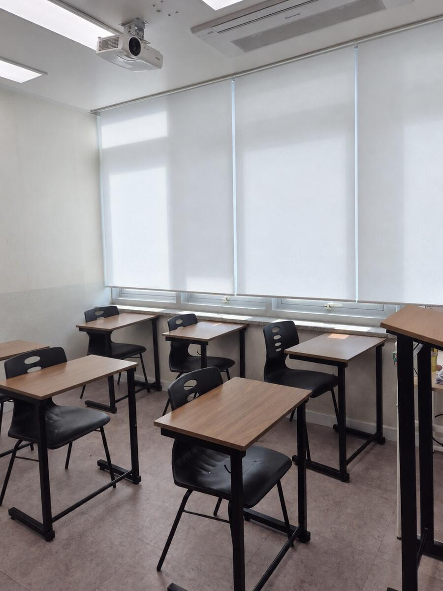

중등 진입 영어·수학
초등 과정을 점검하고 영어 구문독해·원서정독과 수학 중등 선행을 연결해 첫 내신을 준비합니다.
많이 푸는 공부를 넘어, 원리를 이해하고 스스로 설명할 수 있는 힘을 기릅니다.
학생마다 다른 속도와 현재 위치에 맞춰 성장 과정을 세심하게 관리합니다.
학년만으로 반을 정하지 않습니다. 상담과 진단을 통해 학생에게 필요한 시작 단계와 학습 순서를 안내합니다.
초등 과정을 점검하고 영어 구문독해·원서정독과 수학 중등 선행을 연결해 첫 내신을 준비합니다.
영어는 EVT 소리 훈련과 어순 영작부터, 수학은 연산과 교과 개념부터 현재 수준에 맞춰 시작합니다.
문장 구조와 원서정독, 수학 개념과 유형 학습을 학교별 내신·서술형·오답 관리로 연결합니다.
수업 가능 시간과 과정은 학생의 현재 진도 및 선택 프로그램에 따라 달라질 수 있으며, 진단과 상담 후 안내드립니다.
기초를 다시 세우고, 학교 시험과 발표 무대에서 자신의 실력을 보여준 QWM 학생들의 실제 사례입니다.
실제 재원생 학습 및 대회 사례이며, 성과는 학생의 출발점과 학습 과정에 따라 달라질 수 있습니다.
QWM은 정답만 확인하지 않습니다. 영어는 문장의 구조를 읽고, 수학은 풀이의 근거를 찾도록 지도합니다.
“문법이 구조가 되고,읽는 법을 다시 배우는 QWM 영어
구조가 독해가 된다.”
말하고, 쓰고, 설명하며 배운 내용을 자기 것으로 만듭니다.
같은 학년도 학생별 수준과 속도에 맞춰 학습을 조정합니다.
평소의 실력 학습이 학교 내신과 서술형 대비로 연결됩니다.
학생이 편안하게 머물며 자신의 학습에 집중할 수 있도록 수업 공간을 운영합니다.



각 단계가 따로 끝나지 않고 다음 학습으로 연결되도록 영어와 수학의 기초부터 내신·수능까지 설계합니다.
소리를 정확히 익히는 단계에서 시작해 문장을 만들고, 구조를 분석하고,
수준 높은 원서를 읽는 힘으로 이어갑니다.
연산과 개념을 정확히 이해한 뒤 유형 적용, 응용·심화, 서술형과 내신·수능 문제 해결로 확장합니다.
학생마다 막히는 지점은 다릅니다. QWM은 문제집의 양을 정하기 전에 어디서 이해가 끊기는지 살펴봅니다.
단어를 몰라 읽지 못하는지, 문장의 뼈대가 보이지 않는지, 내용을 이해했어도 시험 문제에 적용하지 못하는지에 따라 다음 수업이 달라집니다.
발음과 철자를 연결하는 소리 훈련부터 점검합니다. 단어는 뜻만 외우고 끝내지 않고 문장 안에서 다시 읽고 써봅니다.
품사와 문장 성분을 확인한 뒤 주어·동사부터 찾습니다. 표로 보는 문법과 구문독해를 통해 수식어가 어디에 붙는지 직접 표시하며 읽습니다.
학교별 범위의 단어·대화문·본문을 이해했는지 먼저 확인합니다. 그다음 핵심 어법, 서술형, 변형 문제를 풀고 틀린 이유를 구분합니다.
답을 보고 이해한 문장과 혼자 읽을 수 있는 문장을 나눠 봅니다. 며칠 뒤 다시 읽고 설명해 보며, 익숙해진 구조를 정독 지문에도 적용합니다.
QWM의 순서: 현재 수준 확인 → 필요한 기초 보완 → 문장 이해 → 문제 적용 → 오답 확인과 재점검. 학생의 출발점에 따라 시작 단계와 속도를 조정합니다.
수업, 과제, 학습 점검, 오답이 하나의 흐름으로 이어져야 실제 실력이 됩니다.
학년보다 현재 실력과 학습 습관을 먼저 확인합니다.
핵심 개념과 구조를 이해하고 직접 적용합니다.
학습 내용을 확인해 이해와 기억의 빈틈을 찾습니다.
오답과 취약 영역을 다시 학습해 다음 단계로 연결합니다.
과정은 학년이 아니라 학생의 현재 진도와 선택 프로그램을 기준으로 배정됩니다.
정확한 과정과 수업료는 진단 및 상담 후 안내드립니다.
교육청 등록번호 제1826호 · 교재비 및 별도 특강비는 해당 과정에 따라 안내됩니다.
단기간의 문제풀이보다, 앞으로 더 어려워질 공부를 감당할 기반을 만들고 싶은 학생과 함께합니다.
수업 가능 시간과 학년, 고민되는 부분을 알려주세요.